资源
笔记
-
SAM 真是太牛逼啦！但是它在医学图像上的性能十分有限。
-
介绍了 MedSAM：
-
设计了一个大规模的医学图像数据集，包含 11 种模式，20 多万个蒙版。提供了关于在定制的新数据集上微调 SAM 的分步教程。
-
开发了一种简单的微调方法（simple fine-tuning method），将 SAM 用于普通医学图像分割。在 21 个 3D 分割任务和 9 个 2D 任务中，比默认 SAM 要好使。
-
第一个也是最著名的**基础分割模型（segmentation foundation model）**是 SAM，它在超过 1B 个蒙版上进行训练，可以根据提示（例如，边界框、点、文本）或以全自动的方式生成准确的对象蒙版。但是自然图像和医学图像之前存在显著差异，这些模型在医学图像分割中的适用性仍然有限，在一些典型的医学图像分割任务（对象边缘信息较弱）中不好使。
SAM 利用了基于 transformer 的架构：
-
使用 transformer-based 的**图像编码器（image encoder）**提取图像特征
- pretrained with masked auto-encoder modeling，可以处理高分辨率图像（即 ），获得的图像嵌入是
-
使用**提示编码器（prompt encoder）**结合用户交互
- 支持四种不同的提示
- 点：通过傅里叶位置编码和两个可学习的标记进行编码，分别用于指定前景和背景
- 边界框：通过其左上角的点和右下角的点进行编码
- 文本：由 CLIP 中经过预训练的文本编码器进行编码
- 掩码：与输入图像具有相同的分辨率，输入图像由卷积特征图编码
- 支持四种不同的提示
-
使用**掩码解码器（mask encoder）**来基于图像嵌入、提示嵌入和输出令牌生成分割结果和置信度得分。
- 采用了轻量级设计，由两个转换器层组成，具有动态蒙版预测头和两个交集（Intersection-over-Union，IOU）分数回归头。
蒙版预测头可以生成 3 个 ，分别对应于整个对象、部分对象和子对象。
{kind=link}
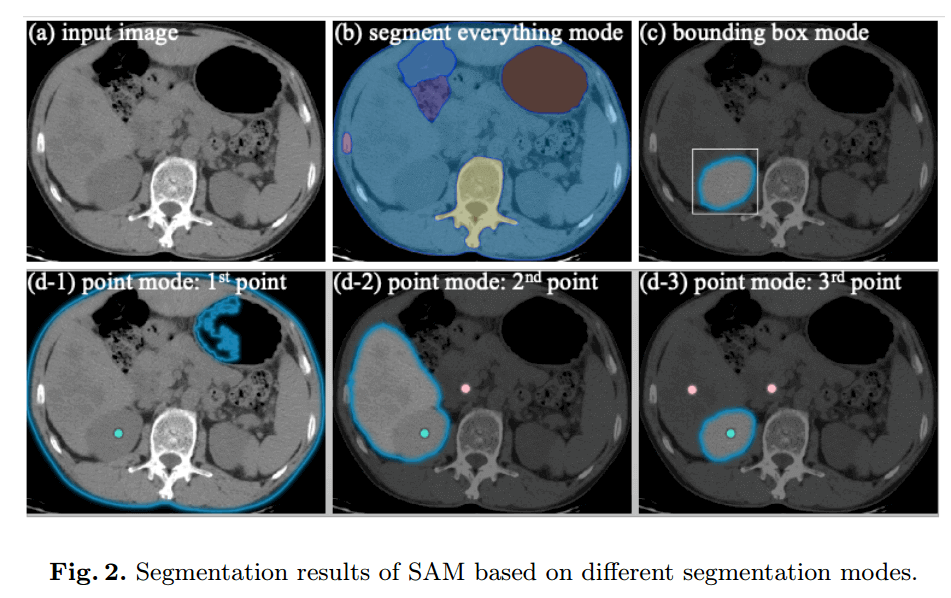
SAM 支持 3 中主要的分割模式：
- 以全自动方式分割所有内容（segment everything in a fully automatic way）
- 没有语义标签，一些分割的东西无意义
- 边界框模式（bounding box mode）
- 只给出左上角和右下角的点，就可以为右肾提供良好的分割结果
- 点模式（point mode）
- 先给一个前景点，再给一个背景点
我们认为，在医学图像分割任务中使用 SAM 时，基于边界框的分割模式比基于分割一切和点的分割模式具有更广泛的实用价值。
为了使 SAM 适用于医学图像分割，有必要选择适当的用户提示和网络组件进行微调。
基于以上分析，边界框提示是指定分割目标的正确选择。SAM 的网络架构包含三个主要组件：图像编码器、提示编码器和掩码解码器。人们可以选择微调它们的任何组合。
-
图像编码器基于 vision transformer，该转换器在 SAM 中具有最大的计算开销。为了降低计算成本，将图像编码器 冻结
-
提示编码器对边界框的位置信息进行编码，并且可以从 SAM 中预先训练的边界框编码器中重复使用，冻结
-
只 微调 掩码解码器
{kind=link}
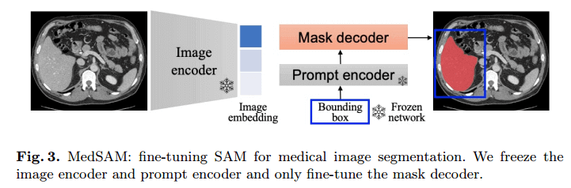
由于图像编码器可以在提示模型之前应用，因此我们可以预先计算所有训练图像的图像嵌入，以避免每次提示的图像嵌入的重复计算，这可以显著提高训练效率。掩码解码器只需要生成一个掩码，而不需要生成三个掩码，因为在大多数情况下，边界框提示可以清楚地指定预期的分割目标。
每个数据集被随机分为80个和20个，用于训练和测试。排除了像素小于 100 的分割目标。由于 SAM 是为 2D 图像分割而设计的，我们将3D图像（即CT、MR、PET）沿平面外维度划分为2D切片。然后，我们使用预先训练的 ViT-Base 模型作为图像编码器，并通过将归一化的图像馈送到图像编码器来离线计算所有图像嵌入（图像编码器将图像大小转换为 ）。在训练期间，边界框提示是从具有0-20个像素的随机扰动的地面实况掩码生成的。损失函数是Dice损失和交叉熵损失之间的未加权和，已被证明在各种分割任务中是稳健的。Adam 优化器对网络进行了优化，初始学习率为1e-5。
使用骰子相似系数（DSC）和归一化表面距离（NSD，公差 1mm）来评估基本事实和分割结果之间的区域重叠率和边界一致性，这是两种常用的分割指标。
我们的代码和经过训练的模型是公开的，我们提供了关于在定制的新数据集上微调SAM的分步教程。我们期待着与社区合作，共同推进这一令人兴奋的研究领域。
代码
配置
新建一个 conda 环境：
conda create -n medsam python=3.10 -y激活之：
conda activate medsam离线安装 pytorch：
从 download.pytorch.org/whl/torch_stable.html 下载对应版本的 pytorch 和 torchvision：
torch-2.0.0+cu117-cp310-cp310-win_amd64.whltorchvision-0.15.1+cu117-cp310-cp310-win_amd64.whl
{kind=link}
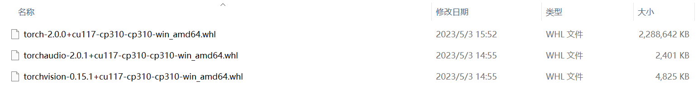
安装之：
pip install torch-2.0.0+cu117-cp310-cp310-win_amd64.whl -i https://pypi.tuna.tsinghua.edu.cn/simplepip install torchvision-0.15.1+cu117-cp310-cp310-win_amd64.whl -i https://pypi.tuna.tsinghua.edu.cn/simple下载仓库：bowang-lab/MedSAM：MedSAM：Segment Anything in Medical Images的官方存储库。 (github.com)
在仓库文件夹下:
pip install -e . -i https://pypi.tuna.tsinghua.edu.cn/simple在自定义数据集上微调 SAM
- 打开
pre_CT.py，查看里面parser都定义了什么玩意儿：
# set up the parser
parser = argparse.ArgumentParser(description='preprocess CT images')
parser.add_argument('-i', '--nii_path', type=str, default='data/FLARE22Train/images', help='path to the nii images')
parser.add_argument('-gt', '--gt_path', type=str, default='data/FLARE22Train/labels', help='path to the ground truth',)
parser.add_argument('-o', '--npz_path', type=str, default='data/Npz_files', help='path to save the npz files')
parser.add_argument('--image_size', type=int, default=256, help='image size')
parser.add_argument('--modality', type=str, default='CT', help='modality')
parser.add_argument('--anatomy', type=str, default='Abd-Gallbladder', help='anatomy')
parser.add_argument('--img_name_suffix', type=str, default='_0000.nii.gz', help='image name suffix')
parser.add_argument('--label_id', type=int, default=9, help='label id')
parser.add_argument('--prefix', type=str, default='CT_Abd-Gallbladder_', help='prefix')
parser.add_argument('--model_type', type=str, default='vit_b', help='model type')
parser.add_argument('--checkpoint', type=str, default='work_dir/SAM/sam_vit_b_01ec64.pth', help='checkpoint')
parser.add_argument('--device', type=str, default='cuda:0', help='device')
# seed
parser.add_argument('--seed', type=int, default=2023, help='random seed')
args = parser.parse_args()| 参数名 | 简称 | 类型 | 默认值 | 备注 |
|---|---|---|---|---|
| --nii_path | -i | str | 'data/FLARE22Train/images' | path to the nii images |
| --gt_path | -gt | str | 'data/FLARE22Train/labels' | path to the ground truth |
| --npz_path | -o | str | 'data/Npz_files' | path to save the npz files |
| --image_size | int | 256 | image size | |
| --modality | str | 'CT' | modality 形态 | |
| --anatomy | str | 'Abd-Gallbladder' | anatomy 解剖 | |
| --img_name_suffix | str | '_0000.nii.gz' | image name suffix 图像名称后缀 | |
| --label_id | int | 9 | label id | |
| --prefix | str | 'CT_Abd-Gallbladder_' | prefix 前缀 | |
| --model_type | str | 'vit_b' | model type 模型类别 | |
| --checkpoint | str | 'work_dir/SAM/sam_vit_b_01ec64.pth' | checkpoint | |
| --device | str | 'cuda:0' | device | |
| --seed | int | 2023 | random seed 随机数种子 |
- 下载 sam_vit_b_01ec64.pth 并将其放置在
work_dir/SAM/中：
{kind=link}
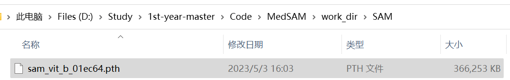
3D
- 下载 FLARE22Train.zip 并将其解压，放置在
data/中：
{kind=link}
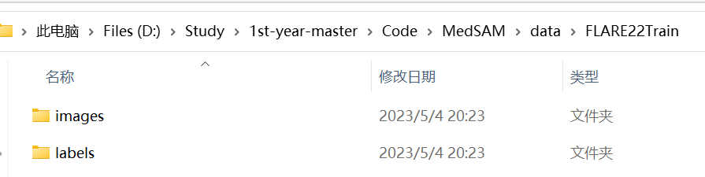
该数据集包含 50 个腹部 CT 扫描，每个扫描包含一个包含 13 个器官的注释面罩。器官标签的名称可在 MICCAI FLARE2022 上找到。 在本教程中，我们将微调 SAM 以进行胆囊 (gallbladder) 分割。
nii.gz 是一种常见的医学影像数据格式。它是基于 NIfTI（Neuroimaging Informatics Technology Initiative）格式的一种压缩文件，通常用于存储头颅和身体的 MRI 和 CT 数据。该格式包含图像的三维体积数据，以及与图像相关的元数据信息，如图像分辨率、采集参数等。nii.gz 文件可以通过各种软件进行读取、编辑和处理，如 FSL、SPM、ANTs 等。
-
开跑
pre_CT.py这只是个预处理！-
拆分数据集：80% 用于训练，20% 用于测试
-
图像归一化
-
预计算图像嵌入
-
将归一化图像
imgs.npy、真实情况掩码gts.npy和图像img_embeddings.npy嵌入另存为文件npz
-
npy 文件是 numpy 保存单个数组的一种二进制文件格式，它可以包含一个 numpy 数组，这个数组的维度和类型等信息都可以被存储在这个文件中。npy 文件通过使用 numpy 库中的 load() 和 save() 函数进行读写。
相比于 txt、csv 这样的文本型数据文件，npy 文件具有更好的性能和可靠性。因为文本型数据需要进行字符串转化和解析等操作，在面对大量数据时会出现读写速度较慢的情况，并且数据解析容易受到不同系统和软件的影响而出现错误。而 npy 文件采用二进制存储，可以直接将内存中的二进制数组写入文件，不需要转化和解析字符串，性能更高，同时因为没有转化字符类型，也不存在因不同系统和软件的影响而出现的数据解析错误。
npz 是 numpy 保存数组的一种格式，它是一种压缩文件格式，可以将多个 numpy 数组打包存放在一个文件中，其压缩率较高。使用 np.savez_compressed() 函数可以生成 .npz 文件，使用 np.load() 函数可以读取 .npz 文件中的数组。相比其他文件格式（如 .txt、.csv 等），.npz 文件可以更方便地用于存储和加载大型数组数据集，因为它可以使用 numpy 库提供的高效的加载和存储方法。此外，.npz 文件还可以轻松地传递和共享数组数据集，并且不像其他文件格式那样需要手动编写 IO 操作代码来读取和写入数据。
{kind=link}
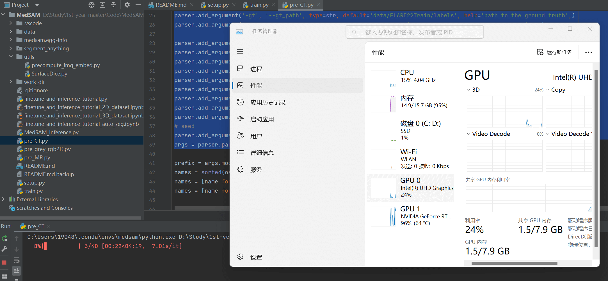
- 然后就可以跑
finetune_and_inference_tutorial_3D_dataset.ipynb！
2D
- 从 MedSAMDemo_2D.zip - Google Drive 下载 2D 数据集，放置在
data/中：
{kind=link}
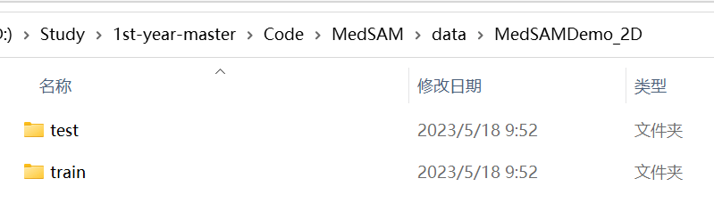
{kind=link}
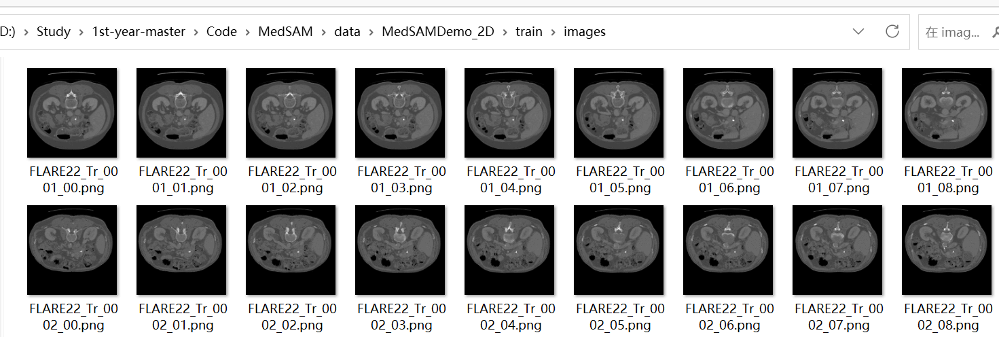
{kind=link}
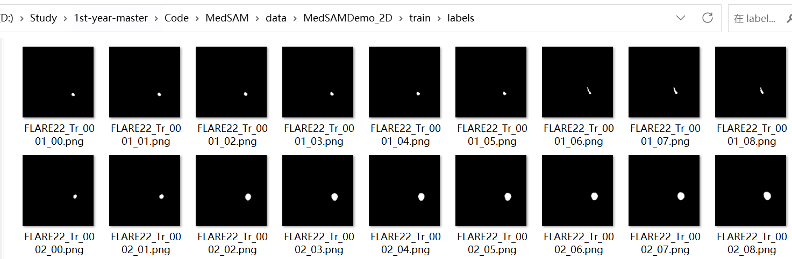
- 开跑
pre_grey_rgb2D.py这只是个预处理！好在这部分用时不是很长，就拿笔记本直接跑了。
{kind=link}
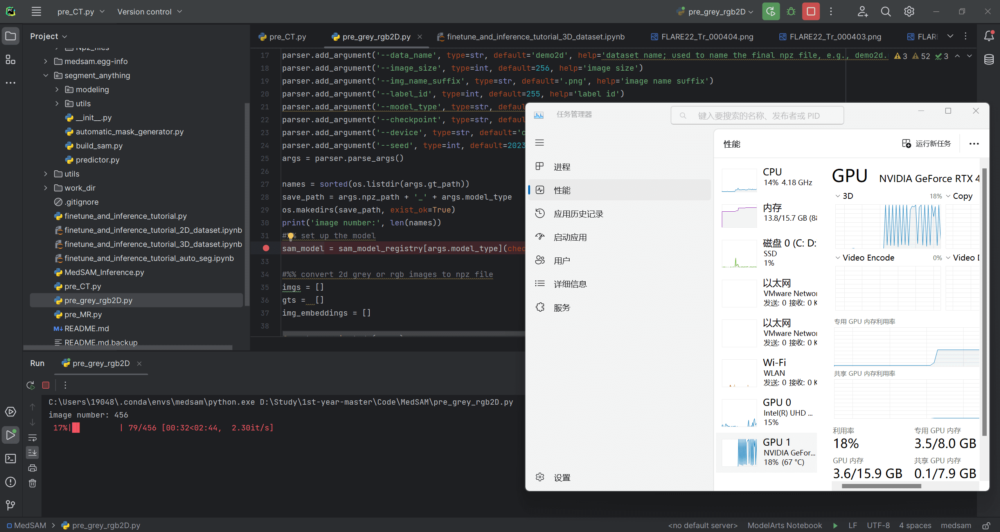
- 获得
data\demo2D_vit_b\demo2d.npz！然后就可以跑finetune_and_inference_tutorial_2D_dataset.ipynb！
{kind=link}
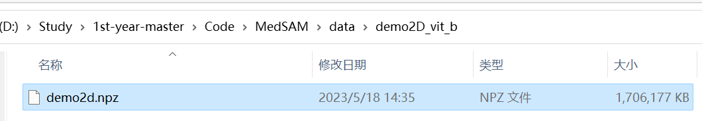
又遇俩坑，填填填：
pip install chardet
pip install --force-reinstall charset-normalizer==3.1.0可以跑了！
{kind=link}
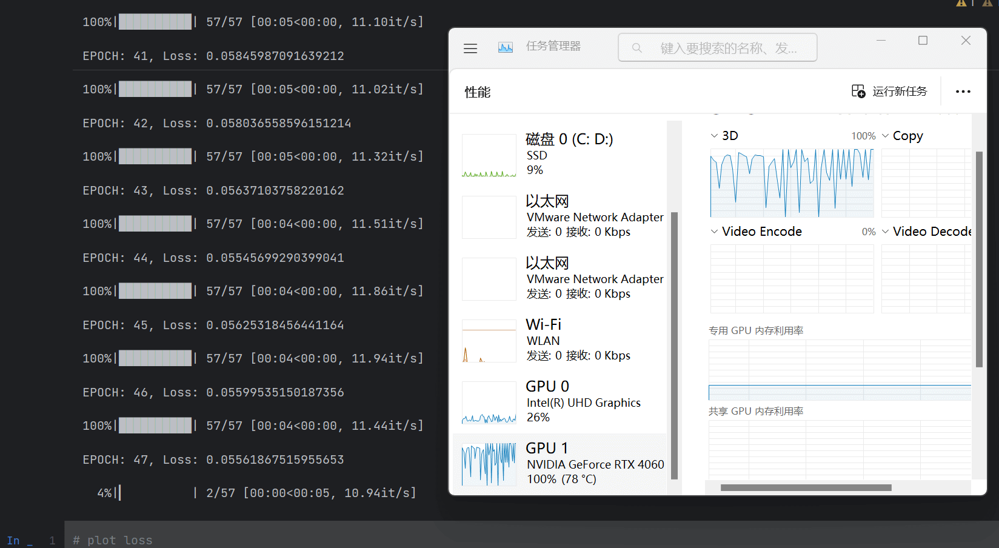
看代码
pre_grey_rgb2D.py
这个代码主要是对数据集进行预处理。
set up the parser
| name | type | default | help |
|---|---|---|---|
| -i, --img_path | str | data/MedSAMDemo_2D/train/images | path to the images |
| -gt, --gt_path | str | data/MedSAMDemo_2D/train/labels | path to the ground truth (gt) |
| -o, --npz_path | str | data/demo2D | path to save the npz files |
| --data_name | str | demo2d | dataset name; used to name the final npz file, e.g., demo2d.npz |
| --image_size | int | 256 | image size |
| --img_name_suffix | str | .png | image name suffix |
| --label_id | int | 255 | label id |
| --model_type | str | vit_b | model type |
| --checkpoint | str | work_dir/SAM/sam_vit_b_01ec64.pth | checkpoint |
| --device | str | cuda:0 | device |
| --seed | int | 2023 | random seed |
# 获取 args.gt_path 目录下所有文件名，并按字典序排序，将结果赋值给 names
names = sorted(os.listdir(args.gt_path))
# 将 args.npz_path 和 args.model_type 拼接成一个新路径名 save_path
save_path = args.npz_path + '_' + args.model_type
# 创建新的目录save_path。如果该目录已经存在，则不做任何操作。如果不存在，则新建该目录及其所有上级目录
os.makedirs(save_path, exist_ok=True)
# 打印输出 names 列表的长度即图片数量
print('image number:', len(names))set up the model
# 初始化模型，设置好 args.model_type、args.checkpoint、args.device
sam_model = sam_model_registry[args.model_type](checkpoint=args.checkpoint).to(args.device)convert 2d grey or rgb images to npz file
imgs = [] # 图片（images）
gts = [] # 标签（labels）
img_embeddings = [] # 图片嵌入信息
# 遍历 ground truth 文件夹, names 默认为 args.gt_path（'data/MedSAMDemo_2D/train/labels'）下排序好的文件列表
for gt_name in tqdm(names):
image_name = gt_name.split('.')[0] + args.img_name_suffix # 获得文件名称 + 后缀名
gt_data = io.imread(join(args.gt_path, gt_name)) # 获得 ground truth 数据
if len(gt_data.shape)==3: # 如果 gt_data 是三维的，则只取第一个通道（灰度图）
gt_data = gt_data[:,:,0]
assert len(gt_data.shape)==2, 'ground truth should be 2D' # 确保分割标签是二维的（高和宽）
# 这行代码的作用是将分割标签（即 gt_data）缩放到指定大小（args.image_size），并将其值转换为二进制形式（0 和 1）。
# 具体来说，它会将分割标签中所有等于 args.label_id 的像素点设置为 1，其余像素点设置为 0，然后将结果缩放到指定大小。
# 这里使用了 scikit-image 库的 transform.resize 函数，
# 并指定了 order=0 表示使用最近邻插值法，
# preserve_range=True 表示保持输入图像的范围不变（即值仍在 0 到 1 之间），
# mode='constant' 表示在缩放后填充常数值的方式为使用边界值填充。
# 最终得到的结果是一个二值图像，即只包含 0 和 1 两种像素值的图像。
gt_data = transform.resize(gt_data==args.label_id, (args.image_size, args.image_size), order=0, preserve_range=True, mode='constant')
# 将gt_data值转换为 8 位无符号整数
gt_data = np.uint8(gt_data)
# exclude tiny objects 如果分割标签中包含的像素点数大于 100，则执行以下操作(对源图像进行预处理，加入最终的数据集中)
if np.sum(gt_data)>100:
# 最大值是 1，就两种像素点。确保分割标签是二值图
assert np.max(gt_data)==1 and np.unique(gt_data).shape[0]==2, 'ground truth should be binary'
# 获得图像数据
image_data = io.imread(join(args.img_path, image_name))
# 如果图像包含透明度通道，则只取前三个通道，即 RGB 通道
if image_data.shape[-1]>3 and len(image_data.shape)==3:
image_data = image_data[:,:,:3]
# 如果图像只有一个通道，则将其复制三次，即得到一个 RGB 图像
if len(image_data.shape)==2:
image_data = np.repeat(image_data[:,:,None], 3, axis=-1)
# nii preprocess start
# 计算图像的亮度范围，即确定合适的像素值下限和上限
# 使用 np.percentile 函数分别计算了图像中像素值从小到大排列后第 0.5% 和第 99.5% 的值，
# 将其作为下限和上限，用于后续的像素值标准化处理
lower_bound, upper_bound = np.percentile(image_data, 0.5), np.percentile(image_data, 99.5)
# 将图像中的像素值限制在 lower_bound 和 upper_bound 之间
image_data_pre = np.clip(image_data, lower_bound, upper_bound)
# 将调整后的图像进行标准化，方法是先将图像中所有像素值减去最小值，然后除以像素值范围（即最大值减去最小值），最后乘以255，使像素值缩放到0-255的范围。
# 这样做的目的是为了使得图像不受亮度范围的影响，并且方便后续模型的处理，因为很多模型输入都需要归一化的图像数据
image_data_pre = (image_data_pre - np.min(image_data_pre))/(np.max(image_data_pre)-np.min(image_data_pre))*255.0
# 将背景像素（黑色）设置为 0
image_data_pre[image_data==0] = 0
# 调整图像大小，并使用三次样条插值方法进行重采样，使得图像更加平滑，并保持图像的范围不变
image_data_pre = transform.resize(image_data_pre, (args.image_size, args.image_size), order=3, preserve_range=True, mode='constant', anti_aliasing=True)
# 将图像像素值转换为 8 位无符号整数
image_data_pre = np.uint8(image_data_pre)
# 将处理后的图像添加到 imgs 列表中
imgs.append(image_data_pre)
# 确保分割标签中包含的像素点数大于100（这里为啥又问一遍？闻到了屎山的味道）
assert np.sum(gt_data)>100, 'ground truth should have more than 100 pixels'
# 将处理后的分割标签添加到gts列表中
gts.append(gt_data)
# resize image to 3*1024*1024
# 创建一个 ResizeLongestSide 对象
# ResizeLongestSide 的类，用于将图像和坐标进行长边缩放。
# 具体来说，该类实现了 apply_image 和 apply_coords 两个方法，分别用于处理图像和坐标
sam_transform = ResizeLongestSide(sam_model.image_encoder.img_size)
# 将该 ResizeLongestSide 对象应用于 image_data_pre 图像，重新调整大小并返回新的图像 resize_img
resize_img = sam_transform.apply_image(image_data_pre)
# 将 numpy 数组 resize_img 转换为 PyTorch 张量，同时将其移动到 GPU
resize_img_tensor = torch.as_tensor(resize_img.transpose(2, 0, 1)).to(args.device)
# 对图像进行预处理，例如减去均值、除以标准差等
input_image = sam_model.preprocess(resize_img_tensor[None,:,:,:]) # (1, 3, 1024, 1024)
assert input_image.shape == (1, 3, sam_model.image_encoder.img_size, sam_model.image_encoder.img_size), 'input image should be resized to 1024*1024'
# pre-compute the image embedding
# 对输入图像进行特征提取，得到图片的 embedding
with torch.no_grad():
embedding = sam_model.image_encoder(input_image)
img_embeddings.append(embedding.cpu().numpy()[0])save all 2D images as one npz file: ori_imgs, ori_gts, img_embeddings
stack the list to array
# 将所有2D图像以及它们的相关信息（如 ground truth 和 image embedding）保存成一个 npz 文件
if len(imgs)>1:
imgs = np.stack(imgs, axis=0) # (n, 256, 256, 3) 表示 n 张 256x256 的 RGB 图像
gts = np.stack(gts, axis=0) # (n, 256, 256) 表示 n 张 256x256 的灰度图像
img_embeddings = np.stack(img_embeddings, axis=0) # (n, 1, 256, 64, 64) 将每张图像转换为了1个256x64x64的图像embedding
# 使用np.savez_compressed函数将这三个numpy数组保存成一个npz文件，其中imgs、gts和img_embeddings分别对应三个关键字参数
np.savez_compressed(join(save_path, args.data_name + '.npz'), imgs=imgs, gts=gts, img_embeddings=img_embeddings)
# save an example image for sanity check 随机选择一个图像进行可视化检查
idx = np.random.randint(imgs.shape[0]) # 随机生成一个索引 idx
# 从 imgs、gts 和 img_embeddings 中提取出该索引对应的图像
# img_idx、ground truth gt_idx 和 image embedding img_emb_idx
img_idx = imgs[idx,:,:,:]
gt_idx = gts[idx,:,:]
# 代码使用scikit-image库的find_boundaries函数找到gt_idx中每个目标的边缘位置，并将img_idx中边缘位置的像素设为红色
bd = segmentation.find_boundaries(gt_idx, mode='inner')
# 将边缘设为红色
img_idx[bd, :] = [255, 0, 0]
# 使用io.imsave函数将处理后的img_idx保存成png文件，以便进一步进行可视化检查
io.imsave(save_path + '.png', img_idx, check_contrast=False)finetune_and_inference_tutorial_2D_dataset.ipynb
在获得预处理好的数据集后，就可以运行 finetune_and_inference_tutorial_2D_dataset.ipynb 对 SAM 模型进行 fine-tune。
class NpzDataset(Dataset)
class NpzDataset(Dataset):
def __init__(self, data_root):
# 读取指定目录下的所有 .npz 文件
self.data_root = data_root
self.npz_files = sorted(os.listdir(self.data_root))
self.npz_data = [np.load(join(data_root, f)) for f in self.npz_files]
# this implementation is ugly but it works (and is also fast for feeding data to GPU) if your server has enough RAM as an alternative, you can also use a list of npy files and load them one by one
# 这个实现是丑陋的，但它可以工作（并且向 GPU 提供数据的速度也很快）如果你的服务器有足够的 RAM 作为替代方案，你也可以使用 npy 文件列表并一个一个地加载它们
# 使用了 np.vstack() 函数对这些数组进行垂直方向上的堆叠操作
# 将它们的 gts 和 img_embeddings 字段整合成两个 numpy 数组: ori_gts 和 img_embeddings
self.ori_gts = np.vstack([d['gts'] for d in self.npz_data])
self.img_embeddings = np.vstack([d['img_embeddings'] for d in self.npz_data])
# 包含了一条有用的调试信息输出语句，输出实际读取数据文件中的 img_embeddings 和 ori_gts 的形状
print(f"{self.img_embeddings.shape=}, {self.ori_gts.shape=}")
def __len__(self):
"""
这段代码定义了 __len__ 方法，该方法返回数据集的大小（即所有样本的个数），在该代码中返回的是 ori_gts 数组的第一维大小。
由于在 NpzDataset 类初始化时，已经将所有 npz 文件中的 gts 字段整合成一个 numpy 数组 ori_gts，因此该方法返回的是所有读取文件中的目标个数（即数据集中的样本数）
"""
return self.ori_gts.shape[0]
def __getitem__(self, index):
# 词嵌入向量
img_embed = self.img_embeddings[index]
# Ground Truth
gt2D = self.ori_gts[index]
# 边界框
y_indices, x_indices = np.where(gt2D > 0)
x_min, x_max = np.min(x_indices), np.max(x_indices)
y_min, y_max = np.min(y_indices), np.max(y_indices)
# add perturbation to bounding box coordinates
# 向边界框坐标添加扰动，以实现数据增强
H, W = gt2D.shape
x_min = max(0, x_min - np.random.randint(0, 20))
x_max = min(W, x_max + np.random.randint(0, 20))
y_min = max(0, y_min - np.random.randint(0, 20))
y_max = min(H, y_max + np.random.randint(0, 20))
bboxes = np.array([x_min, y_min, x_max, y_max])
# convert img embedding, mask, bounding box to torch tensor
# 返回一个三元组：（一个图像的嵌入向量 img_embed, 对应标注的二维 Ground Truth 图 gt2D, 对应的包含目标的边界框的四个坐标 bboxes）
return torch.tensor(img_embed).float(), torch.tensor(gt2D[None, :,:]).long(), torch.tensor(bboxes).float()test dataset class and dataloader
npz_tr_path = 'data/demo2D_vit_b'
# 使用路径 npz_tr_path 创建了一个新的 NpzDataset 实例 demo_dataset
demo_dataset = NpzDataset(npz_tr_path)
# 训练开始前，代码使用 for 循环从 demo_dataloader 中依次读取一个小批量（batch）的数据，用于测试数据集和数据加载器的正确性。批大小为 8，这意味着每次迭代中将读取 8 个数据样本
demo_dataloader = DataLoader(demo_dataset, batch_size=8, shuffle=True)
for img_embed, gt2D, bboxes in demo_dataloader:
# img_embed: (B, 256, 64, 64), gt2D: (B, 1, 256, 256), bboxes: (B, 4)
# 使用 print() 函数打印了从 demo_dataloader 中读取的第一个小批量 img_embed、gt2D 和 bboxes 的形状，以确认它们是否与预期一致
print(f"{img_embed.shape=}, {gt2D.shape=}, {bboxes.shape=}")
# 这里程序使用 break 结束了遍历，只输出了第一个小批量的结果
breakset up model for fine-tuning
# train data path
npz_tr_path = 'data/demo2D_vit_b' # 训练数据
work_dir = './work_dir' # 工作目录路径
task_name = 'demo2D' # 任务名称
# prepare SAM model
model_type = 'vit_b' # 模型类型
checkpoint = 'work_dir/SAM/sam_vit_b_01ec64.pth' # 预训练模型
device = 'cuda:0' # 设备
model_save_path = join(work_dir, task_name) # 模型保存地址
os.makedirs(model_save_path, exist_ok=True)
sam_model = sam_model_registry[model_type](checkpoint=checkpoint).to(device) # 加载模型
sam_model.train() # 设为训练模式
# Set up the optimizer, hyperparameter tuning will improve performance here
optimizer = torch.optim.Adam(sam_model.mask_decoder.parameters(), lr=1e-5, weight_decay=0) # 优化器
# 代码定义了一个分割损失函数，其中采用 DiceLoss 和 CrossEntropyLoss 的结合体。
# DiceLoss 是一个测量预测分割与真实分割偏差的指标，CrossEntropyLoss 则是针对多分类问题的损失函数，用于评估预测结果的匹配程度
seg_loss = monai.losses.DiceCELoss(sigmoid=True, squared_pred=True, reduction='mean') # 损失函数self.img_embeddings.shape=(456, 256, 64, 64), self.ori_gts.shape=(456, 256, 256)
img_embed.shape=torch.Size([8, 256, 64, 64]), gt2D.shape=torch.Size([8, 1, 256, 256]), bboxes.shape=torch.Size([8, 4])
training
原作者用的是 NVIDIA RTX A5500，配有 24 GB 显存，而我的 RTX 4060 只有 8GB 显存，emmm 只能把 batch_size 调小。我调成了 8。训练过程中显存使用量一直维持在 2GB，感觉可以再调大些？
num_epochs = 100 # 迭代次数
losses = [] # 空列表，用于存放每个 epoch 的损失值
best_loss = 1e10 # 最优损失值
train_dataset = NpzDataset(npz_tr_path) # 读入训练数据
# 定义数据加载器以便读取和组合数据，同时将样本分成大小为 64 的批次，并打乱顺序
train_dataloader = DataLoader(train_dataset, batch_size=64, shuffle=True)
for epoch in range(num_epochs):
epoch_loss = 0
# train
# step 表示当前处理到了第几个批次
# image_embedding 是嵌入图像的特征向量
# gt2D 是训练数据的真实遮罩层标签
# boxes 是真实的 2D 边界框
for step, (image_embedding, gt2D, boxes) in enumerate(tqdm(train_dataloader)):
# do not compute gradients for image encoder and prompt encoder
# 冻结 图像编码器 和 提示编码器
with torch.no_grad():
# convert box to 1024x1024 grid
# 将边界框坐标从原始坐标系转换为 1024x1024 网格坐标系
box_np = boxes.numpy()
# 改变大小
sam_trans = ResizeLongestSide(sam_model.image_encoder.img_size)
# 改变提示框大小
box = sam_trans.apply_boxes(box_np, (gt2D.shape[-2], gt2D.shape[-1]))
# 转换成 pytorch 张量
box_torch = torch.as_tensor(box, dtype=torch.float, device=device)
if len(box_torch.shape) == 2:
"""
这段代码实现的是获取提示嵌入的过程。
首先通过 if 语句来判断 box_torch 张量的形状是否为 (B, 4)，
其中 B 表示批次大小，4 表示边界框的坐标信息（左上角点和右下角点）。
如果 box_torch 张量的形状是 (B, 4)，则执行 if 语句中的代码进行扩维处理，
将其转换为形状为 (B, 1, 4) 的张量。
这么做是为了在后面的计算中保证输入张量的形状一致，从而避免出现维度不匹配的错误
"""
box_torch = box_torch[:, None, :] # (B, 1, 4)
# get prompt embeddings 获取提示嵌入
sparse_embeddings, dense_embeddings = sam_model.prompt_encoder(
points=None, # 没有用到点的信息
boxes=box_torch, # 使用边界框来提取特征
masks=None, # 没有使用遮罩层来进行像素级的聚合
)
# predicted masks 前向传播
mask_predictions, _ = sam_model.mask_decoder(
image_embeddings=image_embedding.to(device), # (B, 256, 64, 64)
image_pe=sam_model.prompt_encoder.get_dense_pe(), # (1, 256, 64, 64)
sparse_prompt_embeddings=sparse_embeddings, # (B, 2, 256)
dense_prompt_embeddings=dense_embeddings, # (B, 256, 64, 64)
multimask_output=False,
)
# 计算损失函数的值
loss = seg_loss(mask_predictions, gt2D.to(device))
# 反向传播
optimizer.zero_grad()
loss.backward()
optimizer.step()
# 记录损失值
epoch_loss += loss.item()
epoch_loss /= step
losses.append(epoch_loss)
print(f'EPOCH: {epoch}, Loss: {epoch_loss}')
# save the latest model checkpoint
torch.save(sam_model.state_dict(), join(model_save_path, 'sam_model_latest.pth')) # 最近一次 checkpoint
# save the best model
if epoch_loss < best_loss:
best_loss = epoch_loss
torch.save(sam_model.state_dict(), join(model_save_path, 'sam_model_best.pth')) # 最优 checkpointself.img_embeddings.shape=(456, 256, 64, 64), self.ori_gts.shape=(456, 256, 256)
100%|██████████| 57/57 [00:09<00:00, 5.95it/s]
EPOCH: 0, Loss: 0.2000392587589366
……
100%|██████████| 57/57 [00:05<00:00, 11.29it/s]
EPOCH: 99, Loss: 0.03958414628037384
plot loss
plt.plot(losses)
plt.title('Dice + Cross Entropy Loss')
plt.xlabel('Epoch')
plt.ylabel('Loss')
plt.show() # comment this line if you are running on a server
plt.savefig(join(model_save_path, 'train_loss.png'))
plt.close()如果我把 pycharm 的主题设成深色的，matplotlib 输出的图片居然也会是深色的……
{kind=link}
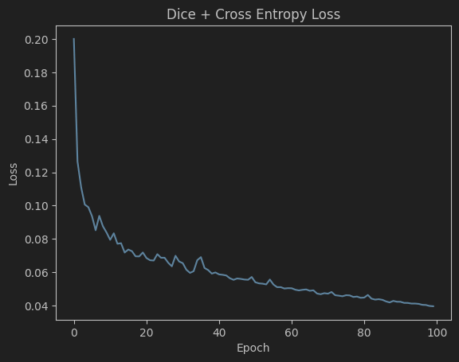
load the original SAM model
from skimage import io
# 加载 原始 SAM 模型 到 GPU 上
ori_sam_model = sam_model_registry[model_type](checkpoint=checkpoint).to(device)
# 加载 predictor
ori_sam_predictor = SamPredictor(ori_sam_model)
# 读入数据集
ts_img_path = 'data/MedSAMDemo_2D/test/images'
ts_gt_path = 'data/MedSAMDemo_2D/test/labels'
test_names = sorted(os.listdir(ts_img_path))
# random select a test case
# 随机读取一张图像
img_idx = np.random.randint(len(test_names)) # 获取索引
image_data = io.imread(join(ts_img_path, test_names[img_idx])) # 读取
if image_data.shape[-1]>3 and len(image_data.shape)==3: # 确保图像只有 3 个通道
image_data = image_data[:,:,:3]
if len(image_data.shape)==2: # 如果是单通道的灰度图像，转成 3 通道
image_data = np.repeat(image_data[:,:,None], 3, axis=-1)
# read ground truth (gt should have the same name as the image) and simulate a bounding box
def get_bbox_from_mask(mask):
'''
Returns a bounding box from a mask
从 ground truth 中提取出边界框坐标信息，用于对图像进行裁剪
'''
y_indices, x_indices = np.where(mask > 0)
x_min, x_max = np.min(x_indices), np.max(x_indices)
y_min, y_max = np.min(y_indices), np.max(y_indices)
# add perturbation to bounding box coordinates
H, W = mask.shape
x_min = max(0, x_min - np.random.randint(0, 20))
x_max = min(W, x_max + np.random.randint(0, 20))
y_min = max(0, y_min - np.random.randint(0, 20))
y_max = min(H, y_max + np.random.randint(0, 20))
return np.array([x_min, y_min, x_max, y_max])
# 获得 ground truth
gt_data = io.imread(join(ts_gt_path, test_names[img_idx]))
bbox_raw = get_bbox_from_mask(gt_data)
# preprocess: cut-off and max-min normalization 图像预处理
lower_bound, upper_bound = np.percentile(image_data, 0.5), np.percentile(image_data, 99.5)
image_data_pre = np.clip(image_data, lower_bound, upper_bound)
# 亮度范围裁剪
image_data_pre = (image_data_pre - np.min(image_data_pre))/(np.max(image_data_pre)-np.min(image_data_pre))*255.0
image_data_pre[image_data==0] = 0
image_data_pre = np.uint8(image_data_pre)
H, W, _ = image_data_pre.shape
# predict the segmentation mask using the original SAM model
# 开跑！
ori_sam_predictor.set_image(image_data_pre)
ori_sam_seg, _, _ = ori_sam_predictor.predict(point_coords=None, box=bbox_raw, multimask_output=False)predict the segmentation mask using the fine-tuned model
# resize image to 3*1024*1024
# 使用 ResizeLongestSide() 函数对原始图像进行大小调整，将其 resize 为 3x1024x1024 的张量
sam_transform = ResizeLongestSide(sam_model.image_encoder.img_size)
resize_img = sam_transform.apply_image(image_data_pre)
# 将调整后的图像张量转换为 PyTorch tensor
resize_img_tensor = torch.as_tensor(resize_img.transpose(2, 0, 1)).to(device)
input_image = sam_model.preprocess(resize_img_tensor[None,:,:,:]) # (1, 3, 1024, 1024)
assert input_image.shape == (1, 3, sam_model.image_encoder.img_size, sam_model.image_encoder.img_size), 'input image should be resized to 1024*1024'
with torch.no_grad():
# pre-compute the image embedding 使用模型的 image_encoder 对象计算图像嵌入向量
ts_img_embedding = sam_model.image_encoder(input_image)
# convert box to 1024x1024 grid 将 box 坐标信息调整到 1024x1024 的网络 grid 上
bbox = sam_trans.apply_boxes(bbox_raw, (H, W))
print(f'{bbox_raw=} -> {bbox=}')
box_torch = torch.as_tensor(bbox, dtype=torch.float, device=device)
if len(box_torch.shape) == 2:
box_torch = box_torch[:, None, :] # (B, 4) -> (B, 1, 4)
# 使用 prompt_encoder 对象计算稠密和稀疏的嵌入向量（dense and sparse embedding）
sparse_embeddings, dense_embeddings = sam_model.prompt_encoder(
points=None,
boxes=box_torch,
masks=None,
)
medsam_seg_prob, _ = sam_model.mask_decoder( # 各种图像嵌入向量
image_embeddings=ts_img_embedding.to(device), # (B, 256, 64, 64)
image_pe=sam_model.prompt_encoder.get_dense_pe(), # (1, 256, 64, 64)
sparse_prompt_embeddings=sparse_embeddings, # (B, 2, 256)
dense_prompt_embeddings=dense_embeddings, # (B, 256, 64, 64)
multimask_output=False,
)
medsam_seg_prob = torch.sigmoid(medsam_seg_prob) # 压缩到[0, 1]
# convert soft mask to hard mask
medsam_seg_prob = medsam_seg_prob.cpu().numpy().squeeze()
medsam_seg = (medsam_seg_prob > 0.5).astype(np.uint8)
print(medsam_seg.shape)bbox_raw=array([164, 159, 189, 187], dtype=int64) -> bbox=array([[656, 636, 756, 748]], dtype=int64)
(256, 256)
计算准确率
表明我们这个操作确实牛逼！
ori_sam_dsc = compute_dice_coefficient(gt_data>0, ori_sam_seg>0)
medsam_dsc = compute_dice_coefficient(gt_data>0, medsam_seg>0)
print('Original SAM DSC: {:.4f}'.format(ori_sam_dsc), 'MedSAM DSC: {:.4f}'.format(medsam_dsc))Original SAM DSC: 0.7397 MedSAM DSC: 0.9145
visualization functions
# visualization functions
# source: https://github.com/facebookresearch/segment-anything/blob/main/notebooks/predictor_example.ipynb
# change color to avoid red and green
def show_mask(mask, ax, random_color=False):
if random_color:
color = np.concatenate([np.random.random(3), np.array([0.6])], axis=0)
else:
color = np.array([251/255, 252/255, 30/255, 0.6])
h, w = mask.shape[-2:]
mask_image = mask.reshape(h, w, 1) * color.reshape(1, 1, -1)
ax.imshow(mask_image)
def show_box(box, ax):
x0, y0 = box[0], box[1]
w, h = box[2] - box[0], box[3] - box[1]
ax.add_patch(plt.Rectangle((x0, y0), w, h, edgecolor='blue', facecolor=(0,0,0,0), lw=2))
_, axs = plt.subplots(1, 3, figsize=(25, 25))
axs[0].imshow(image_data)
show_mask(gt_data>0, axs[0])
# show_box(box_np[img_id], axs[0])
# axs[0].set_title('Mask with Tuned Model', fontsize=20)
axs[0].axis('off')
axs[1].imshow(image_data)
show_mask(ori_sam_seg, axs[1])
show_box(bbox_raw, axs[1])
# add text to image to show dice score
axs[1].text(0.5, 0.5, 'SAM DSC: {:.4f}'.format(ori_sam_dsc), fontsize=30, horizontalalignment='left', verticalalignment='top', color='yellow')
# axs[1].set_title('Mask with Untuned Model', fontsize=20)
axs[1].axis('off')
axs[2].imshow(image_data)
show_mask(medsam_seg, axs[2])
show_box(bbox_raw, axs[2])
# add text to image to show dice score
axs[2].text(0.5, 0.5, 'MedSAM DSC: {:.4f}'.format(medsam_dsc), fontsize=30, horizontalalignment='left', verticalalignment='top', color='yellow')
# axs[2].set_title('Ground Truth', fontsize=20)
axs[2].axis('off')
plt.show()
plt.subplots_adjust(wspace=0.01, hspace=0)
# save plot
# plt.savefig(join(model_save_path, test_npzs[npz_idx].split('.npz')[0] + str(img_id).zfill(3) + '.png'), bbox_inches='tight', dpi=300)
plt.close(){kind=link}
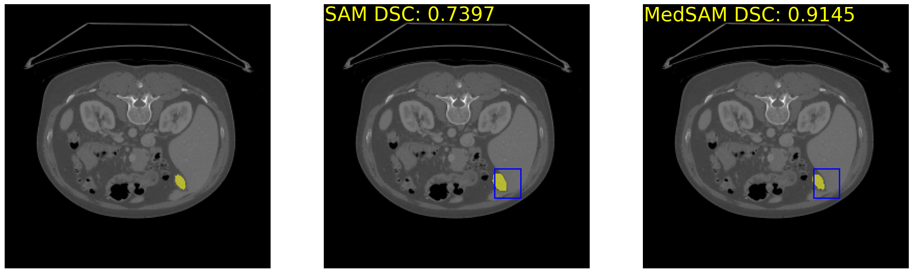